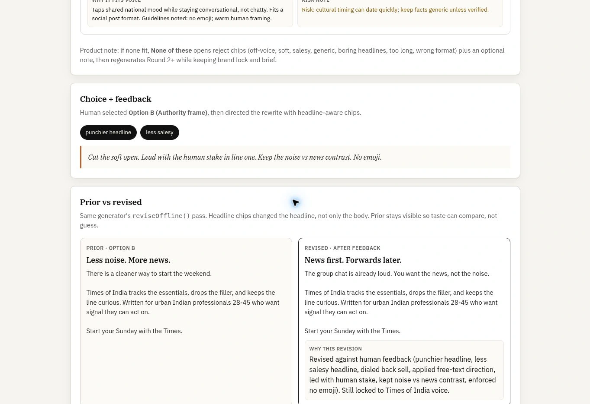

BCCL Brand Voice Agent
Drafts inside a locked brand voice, then lets a human choose, reject and redirect.
The problem
A draft can sound plausible and still miss the brand's voice or the editor's judgement.
The build
A work sample that carries public voice constraints through options, selection, feedback and revision. The captured case-study run makes the prior and revised copy visible together; the public demo uses an offline generator.
The evidence


Work sample
Work sample. Not affiliated with BCCL / Times of India. Public voice constraints, not an internal brand book.